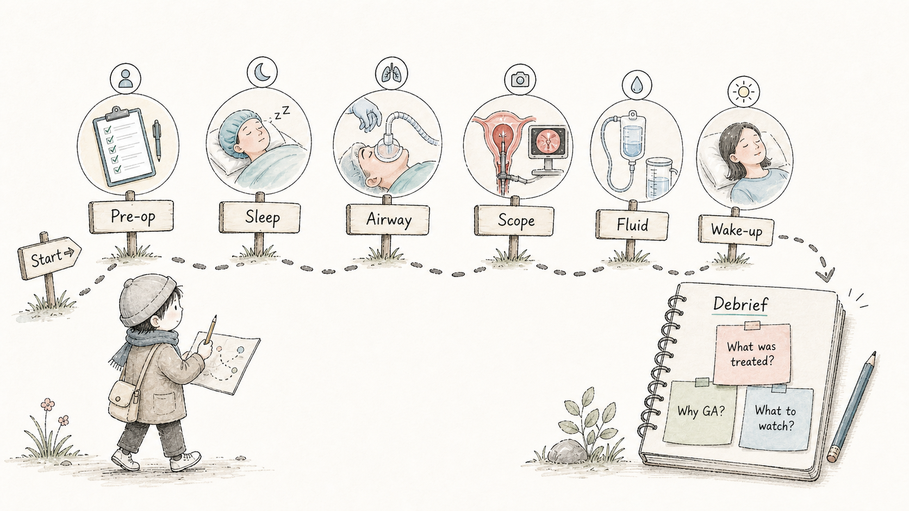
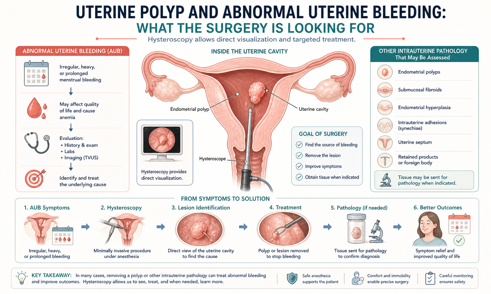
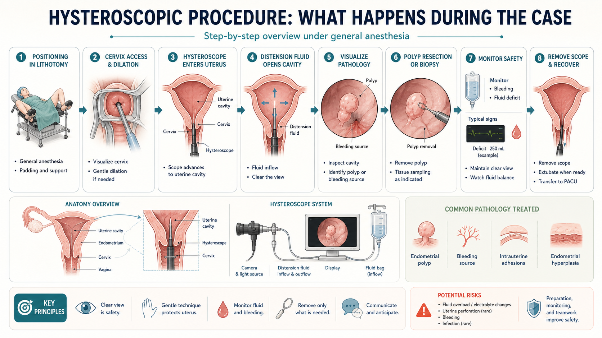
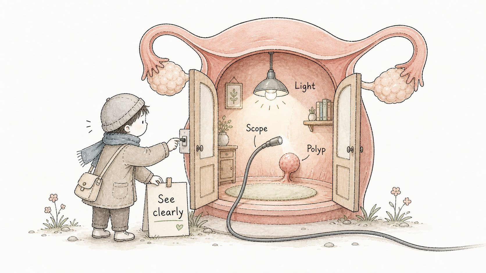
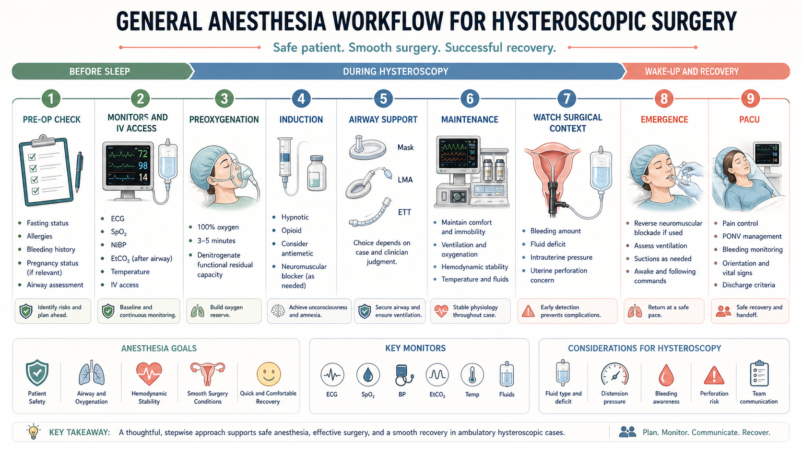
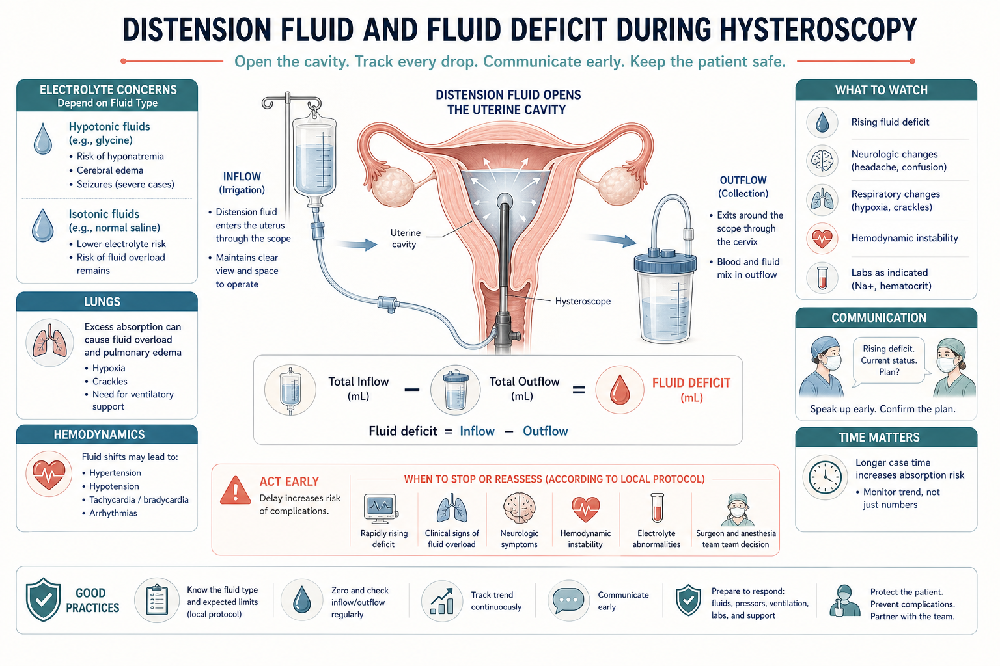
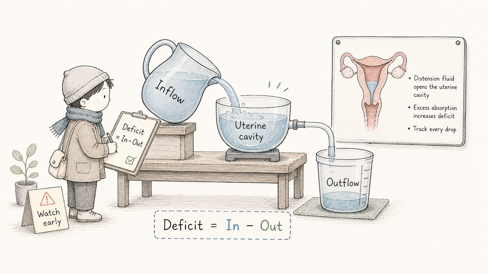
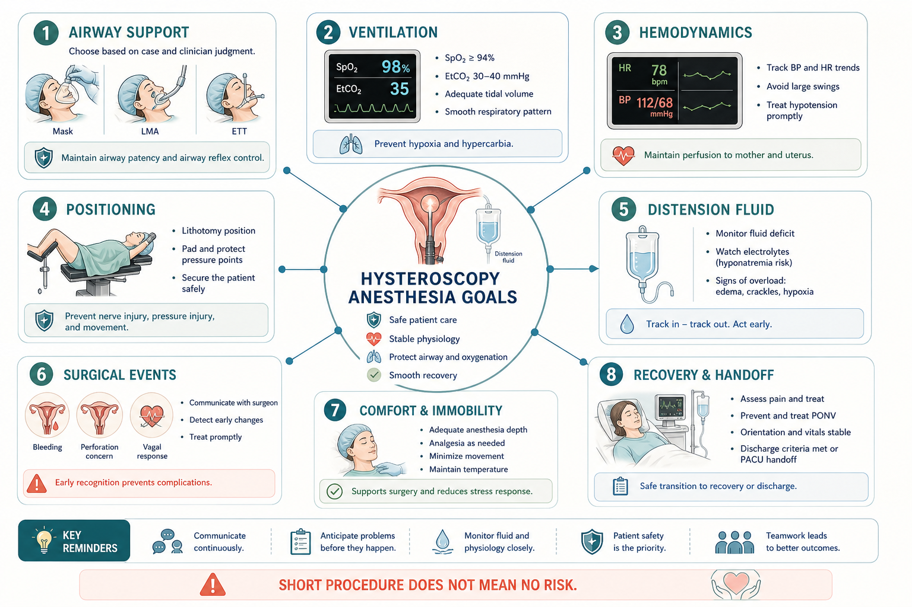

Start Here
这台手术不大，但麻醉观察点不少Small Procedure, Real Anesthesia Concepts
宫腔镜手术通常时间不长，创伤较小，但它仍然需要完整的麻醉评估和监测。学生要特别关注：为什么病人会异常出血，宫腔镜如何看见宫腔，全麻如何让手术顺利完成，以及膨宫液为什么需要记录。
Hysteroscopic surgery is often short and minimally invasive, but it still requires real anesthesia assessment and monitoring. Pay special attention to why the patient has abnormal bleeding, how hysteroscopy visualizes the uterine cavity, how general anesthesia supports the procedure, and why distension fluid must be tracked.

Why Hysteroscopy
为什么做宫腔镜：直接看见宫腔内问题Why Hysteroscopy: Directly See the Uterine Cavity
异常子宫出血 `abnormal uterine bleeding, AUB` 可能与子宫内膜息肉等宫腔内病变有关。宫腔镜 `hysteroscopy` 的价值在于：医生可以进入宫腔内直接观察，定位息肉或可疑出血来源，并在适合时进行切除或取材。
Abnormal uterine bleeding (AUB) can be related to intrauterine pathology such as an endometrial polyp. Hysteroscopy allows the physician to directly visualize the uterine cavity, identify a polyp or bleeding source, and remove or sample tissue when appropriate.

What Happens in the OR
宫腔镜手术会发生什么：镜子、光源、液体、处理病变What Happens: Scope, Light, Fluid, and Lesion Treatment
宫腔镜通过宫颈进入宫腔。为了看清楚，手术需要膨宫液撑开宫腔。医生通过镜子观察内膜、息肉或出血来源，再进行切除、取样或其他处理。
The hysteroscope enters the uterine cavity through the cervix. Distension fluid opens the cavity so the physician can see clearly. The surgeon inspects the endometrium, polyp, or bleeding source, then removes, samples, or treats the lesion as appropriate.


Why General Anesthesia
为什么短手术也可能做全麻Why a Short Procedure May Still Use General Anesthesia
宫腔镜可能涉及宫颈扩张、宫腔操作和短时间刺激。全麻可以帮助病人舒适、减少疼痛和不适、保持制动，让手术更顺利。具体气道方式可能根据患者情况、手术长度、误吸风险和麻醉医生判断选择，例如面罩、喉罩或气管插管。
Hysteroscopy can involve cervical dilation, intrauterine manipulation, and brief but real stimulation. General anesthesia supports comfort, pain control, immobility, and surgical conditions. Airway support may vary by patient factors, procedure length, aspiration risk, and clinician judgment: mask, LMA, or endotracheal tube may be considered.

Distension Fluid
最容易忽略的安全点：膨宫液和 Fluid DeficitThe Hidden Safety Concept: Distension Fluid and Fluid Deficit
宫腔镜需要膨宫液撑开宫腔。进入的液体 `inflow` 和流出的液体 `outflow` 需要记录，两者差值叫 `fluid deficit`。如果液体吸收过多，可能出现液体负荷过多、电解质异常或肺水肿等风险，具体风险与液体类型、手术时间和患者情况有关。
Hysteroscopy uses distension fluid to open the uterine cavity. Inflow and outflow are tracked, and the difference is the fluid deficit. Excess absorption can contribute to fluid overload, electrolyte problems, or pulmonary edema risk, depending on fluid type, procedure duration, and patient factors.


What Anesthesia Watches
麻醉医生术中看什么：短手术也有风险点What Anesthesia Watches: Short Does Not Mean Risk-Free
术中麻醉关注气道、SpO2、EtCO2、血压心率趋势、体位、出血、膨宫液差值、宫腔穿孔可能、疼痛和恶心呕吐。学生要练习把“手术步骤”和“监护仪变化”联系起来。
Intraoperative anesthesia priorities include airway support, SpO2, EtCO2, BP/HR trends, positioning, bleeding, fluid deficit, uterine perforation concern, pain, and PONV. The student should practice linking surgical steps with monitor changes.

Self-Guided Observation Route
学生自己怎么观察：按六个节点走一遍How to Observe Independently: Follow Six Checkpoints
Check Yourself
术后五个自测问题Five Post-Case Self-Check Questions
看完这台手术后，学生可以用 2 分钟回答：这台手术在治疗什么？宫腔镜为什么需要膨宫液？为什么选择全麻？麻醉医生最关注哪几个监测指标？PACU 交接需要听清什么？
After the case, answer in two minutes: What was this surgery treating? Why does hysteroscopy need distension fluid? Why was general anesthesia used? Which monitors mattered most to anesthesia? What should be included in the PACU handoff?